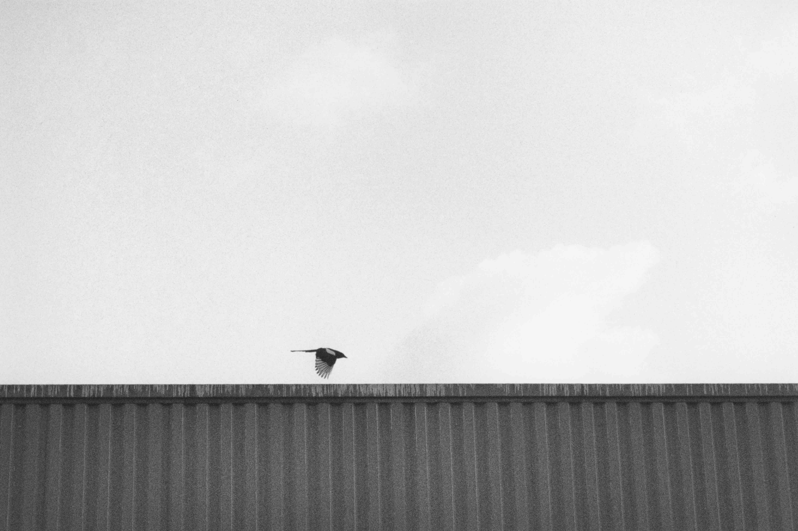
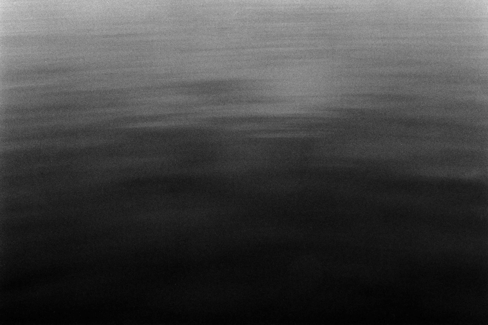
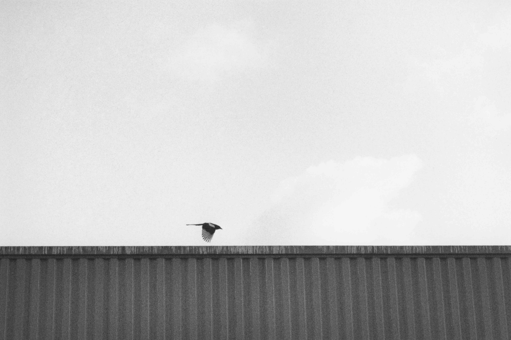
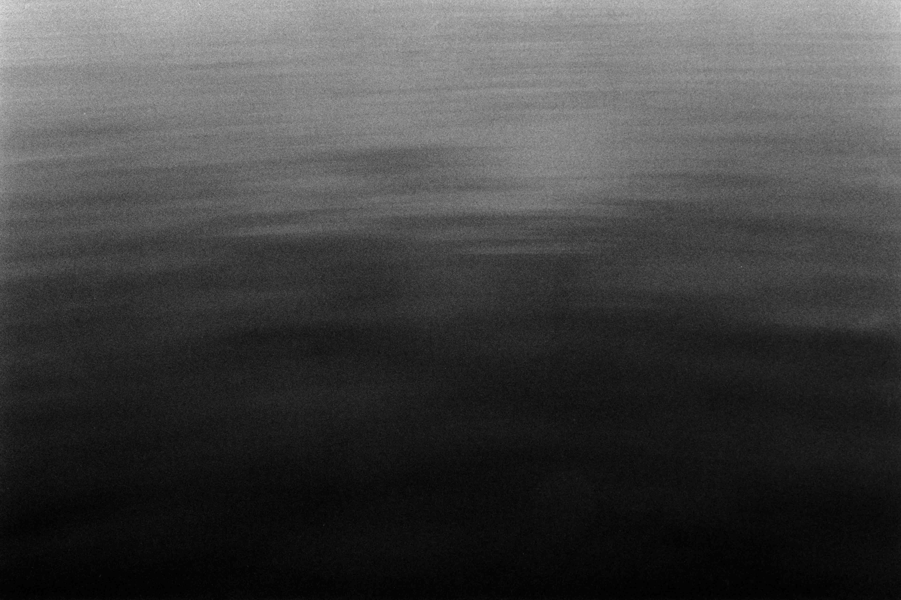
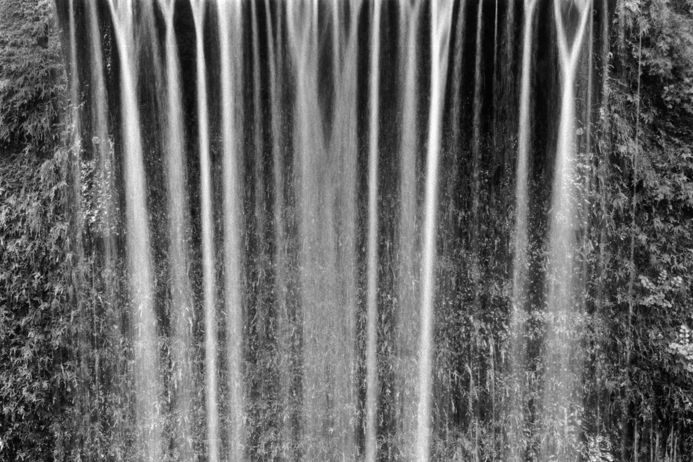
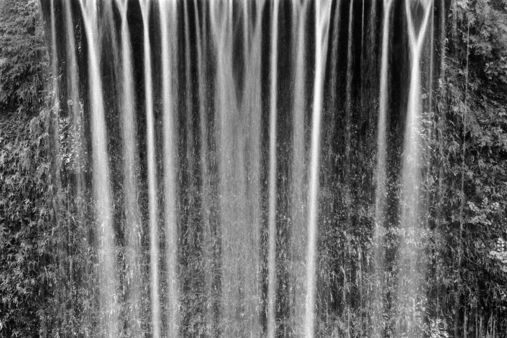

Before this project, I had never picked up a film camera. I wanted to do something different, to escape, for a moment, from the aesthetic and technical perfection of digital photography and create genuinely.
If digital photography exists to highlight the extraordinary, then film, or at least the choice of film in the digital era, exists to enunciate the ordinary. Its idiosyncratic scratches and grain and fuzz elude the perfectionism required of Lake Moraine or the Old Man of Storr. 35mm film in the age of digital photography is just as much about what is behind the lens as what is in front of it.
Working from two shots I took at the end of December 2019--Cart #1 and Sky #1--I assembled a project which tells the story of an edge: the often destitute space between town and country, between the landscape and the landscaped. On one side are the great expanses: the sea and the sky. On the other is the world we have built, of strong facades and jarring lines and angles. I have photographed that which is caught in the middle: pigeons which thrive on the scraps of Falmouth despite their wings, salty water in the shadows of piers despite its membership of the sea, cedars which glow despite their decapitation. This middle ground is not pretty, nor is it particularly ugly. It is, by nature, overlooked; it is an afterthought.
When making each individual image, I did not know how they all connected. At first I thought I was photographing the forgotten and abandoned places in Penryn, but that seemed an inexact description. It was more than that. I had grasped a tone I wanted to explore, but I did not know how to accurately explain it. Often, I do not fully understand my photos until I write about them.
So, I gave the portfolio captions. I tried to show the images’ connection to the portfolio while mirroring their sparse style. The captions’ prepositions--against, between, across--emphasise the edges and contrast in the images. In Water #3, the undulating ripples of the water exist “beneath a strong concrete pier.” In Sky #3, crows exist “between wires and the subtle moon,” between the town and the natural expanse above. Each image was taken both in town and in county. While Falmouth is cobbled streets and student flats, Cornwall connotes rolling hills and cliffs by the sea and a sky full of stars. Each photograph exists in both places, exists where the two overlap.
 



 
